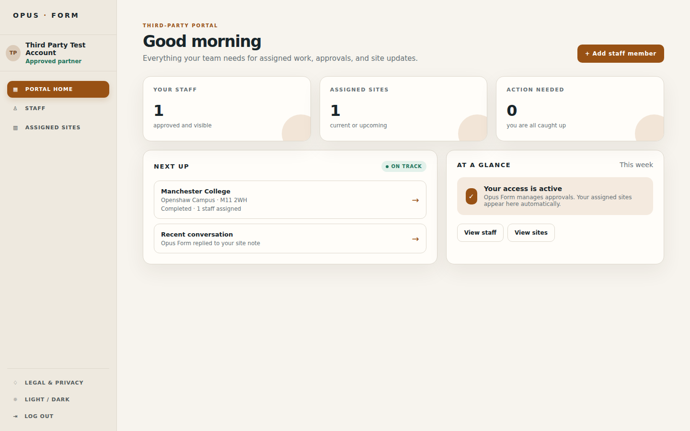
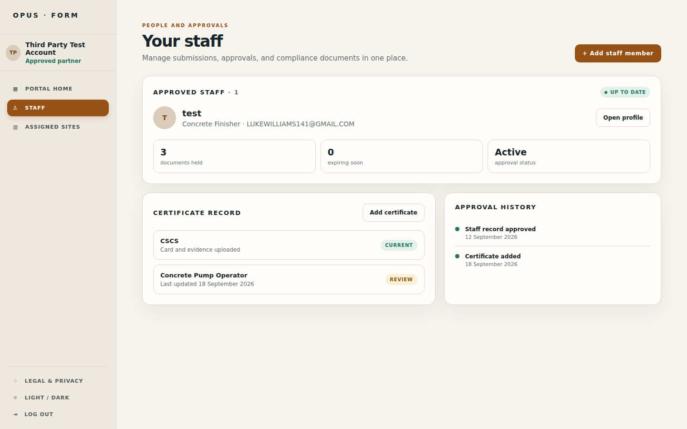
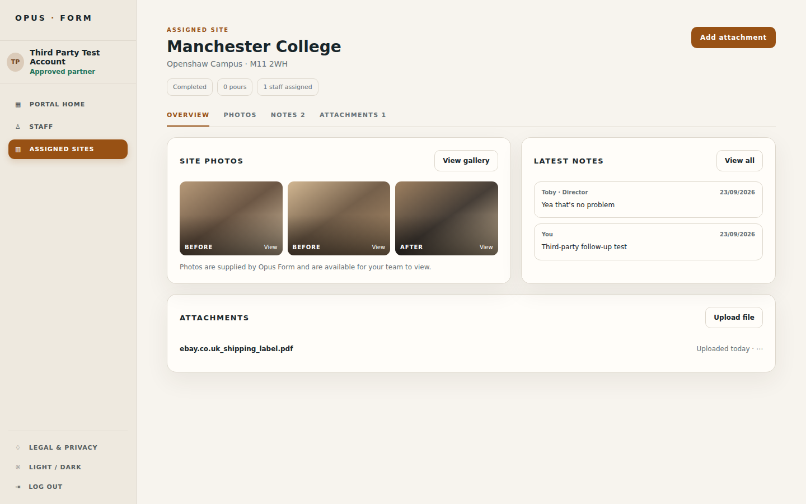
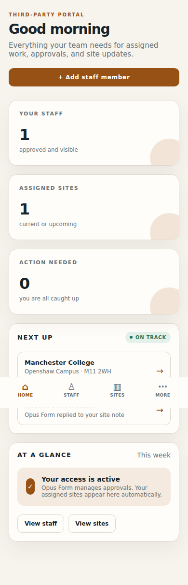
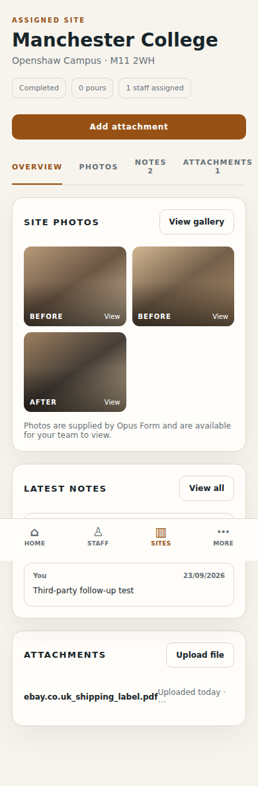

Version 1.0 · 26 September 2026
Using the third-party portal
A plain-English guide to checking your assigned work, managing staff records, and sharing site information with Opus Form.
Your first five minutes
Use this short route when you need to check a site or send Opus Form an update.
Sign in. Use your own portal account. Never use another person’s link or password.
Check Portal home. Look for anything marked Action needed or any recent conversation.
Open Assigned sites. Select the site you need and check its status, staff, notes, and files.
Read before replying. Check the author and date of the latest note, then add only factual, relevant information.
Verify the result. After uploading or sending, confirm that the new item appears in the record before closing the page.
Before you start
The third-party portal is the part of Opus Form that approved partner organisations use. It only shows the people, sites, photos, notes, and files that Opus Form has made available to your account.
You will need
- Your portal email address
- Your password or secure sign-in link
- A phone, tablet, or computer with internet access
What you can do
- See your approved staff
- Open assigned site records
- Read notes and view site photos
- Add permitted staff, attachments, or updates
Portal home
When you sign in, the home page gives you a quick view of what is available and whether anything needs your attention.

| Area | What it tells you | What to do |
|---|---|---|
| Your staff | How many approved staff records you can see. | Open Staff to view details or start a staff submission if the button is available. |
| Assigned sites | How many current or upcoming sites are available to you. | Open Assigned sites to view a site record. |
| Action needed | Whether something needs your attention. | Open the named item and follow the on-screen action. |
| Next up | Your most relevant site or recent conversation. | Select the row to open the detail view. |
Manage your staff
Use Staff to review the people Opus Form has approved for your organisation and check the documents held against each person.

Open Staff. Select Staff in the left-hand menu, or use the staff shortcut on the home page.
Find the person. Check the name, role, and approval status. Select Open profile for the full record.
Check certificates. Review the certificate name, whether evidence is present, and any review or expiry message.
Add or update information. Use Add staff member, Add certificate, or the available upload control. Only submit accurate, current documents.
Status glossary
Current / Active
The record is presently accepted or available to the account.
Review / Needs review
Opus Form needs to check information or evidence before it can be treated as current.
Expiring soon
The record may need renewed evidence before its expiry date.
Expired
The evidence is past its expiry date and should not be treated as current.
Open an assigned site
An assigned site brings the information for one piece of work together: location, status, staff, photos, notes, and attachments.

Photos
Open Photos or View gallery to inspect images supplied for the site. Use the labels and dates to understand what each image shows.
Notes
Open Notes to read the latest conversation. Check who wrote a note and when it was added before acting on it.
Attachments
Use Attachments or Upload file when you need to provide an allowed document. Use a clear filename.
Site status
Read the status and site details together. A completed site may still contain records that are useful for your audit trail.
Adding a file
Select Add attachment or Upload file, if the control is available for that site.
Choose the correct file from your device. Check that it is the intended document and contains no unrelated personal information.
Follow the file-type and size rules shown by the portal. Do not assume that a photo or every file format is accepted.
Wait for the upload to finish before closing the page. If the file does not appear, try again once and then contact Opus Form.
Using the portal on a phone
The portal rearranges itself for smaller screens. The same information is available, but the navigation moves to the top or bottom of the screen and cards stack vertically.




- Use the fixed bottom navigation to move between Home, Staff, Sites, and More.
- Scroll down to see cards and buttons that do not fit side by side. The bottom navigation may cover the last few pixels while you scroll; move slightly further before selecting an item.
- Use More for options such as legal and privacy, theme, and logout.
- Keep the phone upright when uploading a document. Upload a photo only when the portal’s upload control explicitly accepts it.
- If a button is hard to select, use the browser’s normal zoom or switch to a larger screen; report the problem if it remains difficult.
Good practice and help
Before you submit
- Confirm the site and person are correct.
-
Use a clear filename, for example
Manchester-College-site-note-2026-09-26.pdf. - Check that the document is readable and up to date.
- Do not upload passwords, payment card details, or unrelated personal data.
If something is wrong
- Refresh the page once.
- Check your connection and try again.
- Note the site name, time, and what you were trying to do.
- Contact your Opus Form contact and include a screenshot if possible.
What to include when asking for help
Send your organisation, site name, approximate time, device and browser, the action you were taking, the exact error message, and a screenshot if it contains no confidential information.